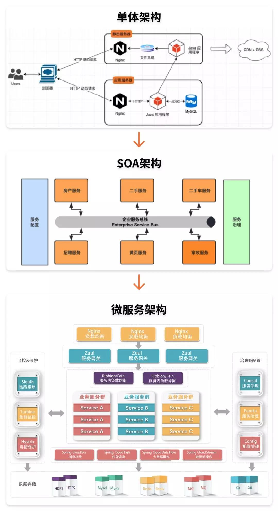
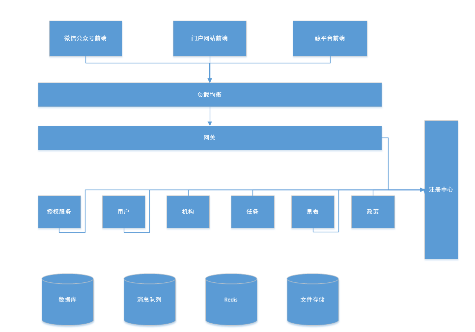

微服务基础介绍


单体结构的一些缺点：
维护成本大： 当应用程序的功能越来越多、团队越来越大时，沟通成本、管理成本显著增加。当出现 bug 时，可能引起 bug 的原因组合越来越多，导致分析、定位和修复的成本增加；并且在对全局功能缺乏深度理解的情况下，容易在修复 bug 时引入新的 bug。
持续交付周期长： 构建和部署时间会随着功能的增多而增加，任何细微的修改都会触发部署流水线。
新人培养周期长： 新成员了解背景、熟悉业务和配置环境的时间越来越长。
技术选型成本高： 单块架构倾向于采用统一的技术平台或方案来解决所有问题，如果后续想引入新的技术或框架，成本和风险都很大。
可扩展性差： 随着功能的增加，垂直扩展的成本将会越来越大；而对于水平扩展而言，因为所有代码都运行在同一个进程，没办法做到针对应用程序的部分功能做独立的扩展。
SOA
SOA 设计喜欢给服务分层(如 Service Layers 模式)。我们常常见到一个 Entity 服务层的设计，美其名曰 Data Access Layer。这种设计要求所有的服务都通过这个 Entity 服务层。来获取数据。这种设计非常不灵活，比如每次数据层的改动都可能影响到所有业务层的服务。
微服务架构的特性
1. 单一职责
微服务架构中的每个服务，都是具有业务逻辑的，符合高内聚、低耦合原则以及单一职责原则的单元，不同的服务通过“管道”的方式灵活组合，从而构建出庞大的系统。
2. 轻量级通信
服务之间通过轻量级的通信机制实现互通互联，而所谓的轻量级，通常指语言无关、平台无关的交互方式。
对于轻量级通信的格式而言，我们熟悉的 XML 和 JSON，它们是语言无关、平台无关的；对于通信的协议而言，通常基于 HTTP，能让服务间的通信变得标准化、无状态化。目前大家熟悉的 REST（Representational State Transfer）是实现服务间互相协作的轻量级通信机制之一。使用轻量级通信机制，可以让团队选择更适合的语言、工具或者平台来开发服务本身。
3. 独立性
每个服务在应用交付过程中，独立地开发、测试和部署。
在单块架构中所有功能都在同一个代码库，功能的开发不具有独立性；当不同小组完成多个功能后，需要经过集成和回归测试，测试过程也不具有独立性；当测试完成后，应用被构建成一个包，如果某个功能存在 bug，将导致整个部署失败或者回滚。
在微服务架构中，每个服务都是独立的业务单元，与其他服务高度解耦，只需要改变当前服务本身，就可以完成独立的开发、测试和部署。
4. 进程隔离
单块架构中，整个系统运行在同一个进程中，当应用进行部署时，必须停掉当前正在运行的应用，部署完成后再重启进程，无法做到独立部署。
有时候我们会将重复的代码抽取出来封装成组件，在单块架构中，组件通常的形态叫做共享库（如 jar 包或者 DLL），但是当程序运行时，所有组件最终也会被加载到同一进程中运行。
在微服务架构中，应用程序由多个服务组成，每个服务都是高度自治的独立业务实体，可以运行在独立的进程中，不同的服务能非常容易地部署到不同的主机上。
理论上所有服务可以部署在同一个服务器节点，但是并不推荐这么做，因为微服务架构的主旨就是高度自治和高度隔离。
java微服务框架
最常见的框架一个是我们在用的spring cloud 另一个是阿里的 dubbo。生态上，spring cloud 更加丰富一些，社区相对强大。说是框架，其实是个微服务的生态圈。基于spring boot （约定大于配置）
下面是两个框架的对比：
| Dubbo | Spring Cloud | |
|---|---|---|
| 服务注册中心 | Zookeeper | Spring Cloud Netflix Eureka |
| 服务调用方式 | RPC | REST API |
| 服务监控 | Dubbo-monitor | Spring Boot Admin |
| 断路器 | 不完善 | Spring Cloud Netflix Hystrix |
| 服务网关 | 无 | Spring Cloud Netflix Zuul |
| 分布式配置 | 无 | Spring Cloud Config |
| 服务跟踪 | 无 | Spring Cloud Sleuth |
| 消息总线 | 无 | Spring Cloud Bus |
| 数据流 | 无 | Spring Cloud Stream |
| 批量任务 | 无 | Spring Cloud Task |
微服务简单来说，就是服务的调用，服务调用呢，我们就得找到对应的服务，所以将所有的服务都注册到注册中心，我们通过服务名就能对相关服务进行调用。两种框架一种是 RPC 调用，一种是 Rest 调用，也就是一个基于Rpc 协议，一个基于http 协议。
系统简单介绍

系统采用前后端分离，前端框架 VUE ，后端 微服务，注册中心是采用的阿里的 nacos，数据库 mysql,消息队列 rabbit mq ,文件存储 分布式 的 fastdfs
我们以量表为例来说明整个访问过程：
首先访问融平台前端 –> 前端需要登录，请求后端网关的负载均衡，网关和授权以及其他服务都注册到注册中心。网关根据请求路径调用不同服务，请求转发到不同的服务。登录就转发到授权服务获取token。前端拿到token ，用户就可以访问有权限的模块。用户点击量表检索，前端将请求发给网关，网关鉴权后，将请求转发至量表服务，量表返回数据，网关返给前端。
后端基本开发介绍
基本技术： mybatis-plus（https://mp.baomidou.com/） 、 spring boot(http://www.ityouknow.com/spring-boot.html) 、mysql
微服务技术：nacos (注册中心) feign（服务调用）、ribbon（负载均衡）、Hystrix(断路器) 服务熔断
Feign是一个声明式的伪Http客户端，它使得写Http客户端变得更简单。使用Feign，只需要创建一个接口并注解。它具有可插拔的注解特性，可使用Feign 注解和JAX-RS注解。Feign支持可插拔的编码器和解码器。Feign默认集成了Ribbon，并和Eureka结合，默认实现了负载均衡的效果。
ribbon是一个负载均衡客户端，可以很好的控制htt和tcp的一些行为。Feign默认集成了ribbon。
在Spring Cloud可以用RestTemplate+Ribbon和Feign来调用。为了保证其高可用，单个服务通常会集群部署。由于网络原因或者自身的原因，服务并不能保证100%可用，如果单个服务出现问题，调用这个服务就会出现线程阻塞，此时若有大量的请求涌入，Servlet容器的线程资源会被消耗完毕，导致服务瘫痪。服务与服务之间的依赖性，故障会传播，会对整个微服务系统造成灾难性的严重后果，这就是服务故障的“雪崩”效应。为此呢，我们引入断路器。

较底层的服务如果出现故障，会导致连锁故障。当对特定的服务的调用的不可用达到一个阀值 断路器将会被打开

断路打开后，可用避免连锁故障，fallback方法可以直接返回一个固定值。
demo